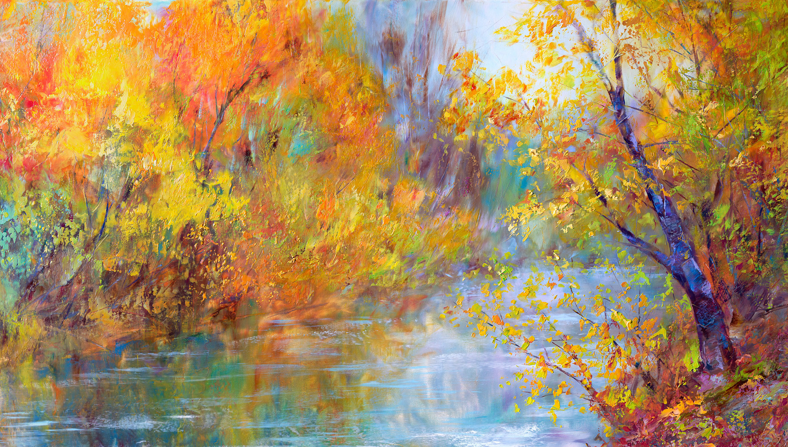

Impresjonizm – Co to jest?
Impresjonizm (fr. impressionisme, łac. impressio „odbicie, wrażenie”) – kierunek w kulturze europejskiej, później także w amerykańskiej, zapoczątkowany przez paryskich malarzy i trwający kilka dekad na przełomie XIX i XX wieku.
Nazwa „impresjonizm” pochodzi od obrazu Moneta Impresja, wschód słońca, eksponowanego na wystawie paryskiej w 1874. Wprowadził ją w sensie satyrycznym krytyk Louis Leroy. Mimo to rozpowszechniła się szybko i zaczęła oznaczać nowy kierunek artystyczny, odnoszący się nie tylko do sztuk plastycznych, ale również do muzyki i literatury.
Cel Impresjonistów
Celem impresjonistów było uwolnienie się od dziedzictwa epoki romantyzmu, sztywnych zasad akademizmu i patosu. Nie interesowała ich tematyka społeczna, problemy metafizyczne, czy historyczny heroizm. Starali się uchwycić nieustannie zmieniającą się rzeczywistość i utrwalić subiektywne, ulotne wrażenia jakie na nich wywarła.
Potrzebowali swobody twórczej, zgodnie z możliwościami danej dziedziny sztuki i specyficznymi dla niej środkami wyrazu. Forma zyskała dominujące znaczenie. O walorach artystycznych rozstrzygało w poezji, malarstwie i muzyce wysublimowane, zmysłowe działanie słowa, barwy i brzmienia, odwołujące się do osób wrażliwych na subtelne ich niuanse
Impresjonizm w sztuce
W sztukach wizualnych impresjonizm został zapoczątkowany przez grupę paryskich artystów studiujących w Atelier Gleyère oraz w Académie Suisse w drugiej połowie XIX wieku. Oficjalnie za początek impresjonizmu uznaje się pierwszą zbiorową wystawę zorganizowaną w atelier fotograficznym Nadara w 1874 roku.
Charakterystyczna dla tego kierunku jest dążność twórców do uchwycenia nastroju chwili wyrażanego czystymi, zwykle jasnymi barwami, kontrastowym światłocieniem, nietypowym kątem widzenia, zaburzoną równowagą kompozycyjną. Impresjoniści zrezygnowali z tematów biblijnych, literackich, mitologicznych i historycznych; wyszli w plener i malowali pejzaże oraz radosne sceny rodzajowe.
Do głównych przedstawicieli impresjonizmu zaliczali się:
- Claude Monet
- Camille Pissarro
- Auguste Renoir
- Edgar Degas
- Alfred Sisley
- Max Liebermann
- Józef Pankiewicz
- Władysław Podkowiński
- i inni.
Impresjonizm w muzyce
Za początek impresjonizmu w muzyce uważa się rok 1894, będący datą powstania preludium Popołudnie Fauna (Prélude à l’après-midi d’un faune) (1894) Claude’a Debussy’ego, który był głównym reprezentantem tego kierunku. Po śmierci Debussy’ego w 1918 impresjonizm muzyczny zaczął tracić na znaczeniu i ewoluować w neo–, a potem w postimpresjonizm.
Obok Debussy’ego do impresjonistów zalicza się m.in.:
- Maurica Ravela
- Alberta Roussela
- Ottorino Respighiego
- Manuela de Fallę
- Karola Szymanowskiego
Charakterystyczną cechą impresjonizmu muzycznego jest programowość inspirowana np. folklorem, starożytnością, egzotyką, zjawiskami przyrody itp., a także nowy stosunek do formy muzycznej oraz zmiana sposobu orkiestracji preferującej pojedyncze instrumenty
Impresjonizm w literaturze
W literaturze pierwsze inspiracje zaczerpnięte od malarzy impresjonistów, pojawiły się w drugiej połowie XIX wieku we Francji. Po raz pierwszy w odniesieniu do literatury termin ten zastosował Ferdinand Brunetière w artykule Impresjonizm w powieści.
Literackie utwory impresjonistyczne kładły nacisk przede wszystkim na opisywanie wrażeń i doznań poznającego podmiotu, rezygnując z realistycznego przedstawiania rzeczywistości. Tendencje impresjonistyczne występowały zarówno w prozie, poezji, jak i dramacie. Kierunek ten nigdy się w pełni nie wyodrębnił, nie miał też charakteru programowego.
Do pisarzy posługujących się środkami impresjonistycznymi należeli m.in.:
- Alphonse Daudet
- Stéphane Mallarmé
- Paul Verlaine
- Stefan Żeromski
- Władysław Reymont